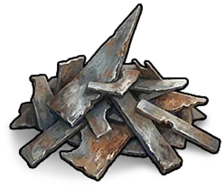

Matériaux
Objets · MatériauxFragments de métal
Metal Fragment

Metal Fragment / MatériauxComment l’obtenir
Comment l’obtenirButinS’obtient dans le butin
Récompenses / BoutiqueS’obtient en récompense ou en boutique
FourMinerai de métal → Fragments de métal ×1
RecyclageObtenu en recyclant : Buggy ×150, LUGE D'HIVER LUMINEUSE ×150, Hélico ×150, Lance-roquettes ×75, Carrière de mine de clan ×75, Recycleur de ferraille du clan ×50, Distributeur automatique ×50, Scierie du clan ×50, Armure militaire ×50, Machette ×40, Four avancé ×40, Porte double en métal ×40, Fusil d’assaut ×35, B51 ×35, Porte blindée ×35, Ordinateur de ciblage ×30, Fusil de chasse ×30, Perce-pierre ×30, Piège à fusil ×30, Fusil à deux canons ×30, Desert Eagle ×30, Machine à neige ×25, Masse ×25, Porte de garage ×25, Trappe métallique triangulaire ×25, Feu d'artifice ×25, Tourelle ×25, Trappe métallique carrée ×25, Tourelle à bouled de neige ×25, Thompson ×20, Tôle ×20, Plastron en métal ×20, Bouclier de chevalier ×20, Porte en métal ×18, Jambières en métal ×18, Fusil semi-automatique ×18, Bottes en métal ×16, Casque en métal ×16, Massue à pointes en bois ×15, Grand portail extérieur en bois ×15, Hélice de véhicule ×15, Grenade F1 ×15, Portails en pierre hauts ×15, Lit ×15, Scie-étripeuse ×15, Révolver ×15, Chaudron ×15, Serrure à code ×15, Jukebox festif ×15, Banc de réparation ×15, Embrasure de fenêtre métallique avec vue partielle ×15, Mine à pression ×15, Pistolet artisanal ×12, Roquette ×12, Pistolet-mitrailleur pneumatique ×12, Réservoir de propane vide ×12, Lance en fer ×12, Mitraillette ×12, Arbalète ×10, Autocollant ×10, Grande boîte de rangement ×10, Moteur de véhicule ×10, Pistolet à tuyau ×8, Pistolet de signalisation ×7, Boîte de haricots vide ×5, Ressort métallique ×5, Lampe de plafond ×5, Grenade fumigène ×5, Viseur Fait Main ×5, Grenade Improvisée ×5, Chouette de bronze ×5, Lame métallique ×5, Engrenages ×5, Pioche ×5, Kit médical ×5, Tuyau métallique ×5, Hache ×5, Boîte de thon vide ×4, Câbles ×3, Explosifs ×2, Cartouche artisanale ×1, Munitions pour pistolet ×1, Munitions pour carabine 5,56 ×1, Bille d'acier ×1, Chevrotine calibre 12 ×1
Description de l’objet
Minerai de métal fondu. Utile pour fabriquer des armes.
Notes de fabrication
Fondu à partir de minerai de métal dans un four. Peut être trouvé dans les caisses de butin sur la carte.